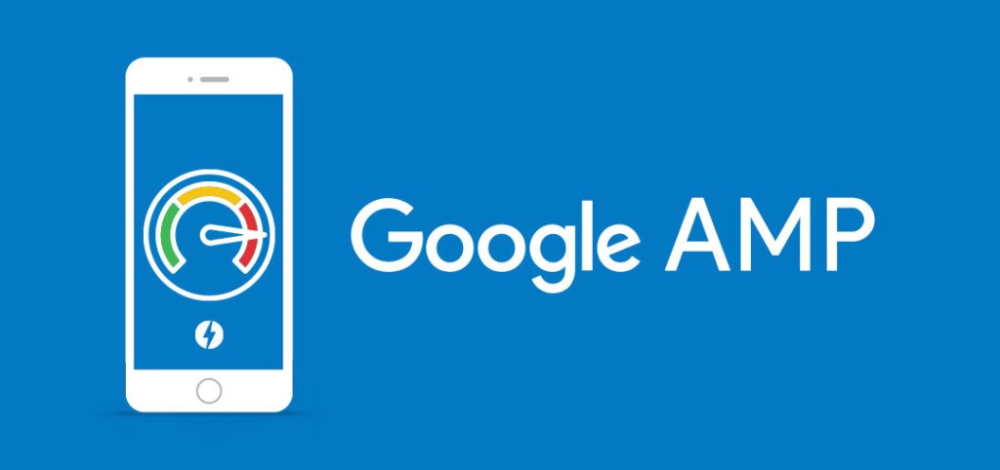

Первый релиз AMPМР от Google состоялся 7 октября 2015.
Accelerated Mobile Pages (AMP) — технология ускоренных мобильных страниц с открытым исходным кодом.
Она позволяет при низкой скорости сети выполнить оперативную загрузку веб-страниц.
Создана компанией Google в 2015 году
История
Проект AMP был анонсирован компанией Google 7 октября 2015 года.
Более 30 новостных изданий и несколько технологических компаний, включая Twitter, Pinterest, xLinkedIn и WordPress,
были анонсированы заранее в качестве партнеров проекта AMP.
Впервые протестировать технологию пользователям удалось в феврале 2016 года, когда Google начал показывать версии веб-страниц AMP в результатах мобильного поиска.
Ссылки AMP в поисковой системе Google идентифицируются значком. В феврале 2017 года, через год после публичного запуска , AMPкомпания Adobe сообщила, что на AMP-страницы приходится 7 % всего веб-трафика для ведущих изданий в Соединенных Штатах.
В мае 2017 года компания Google сообщила, что глобальный охват пользования технологией быстрой загрузки страниц составляет более 2 миллиардов AMP-страниц, опубликованных во всем мире.
В июне 2017 года Twitter начал ссылаться на страницы AMP из своих приложений
для iOS и Android.
Технология
Формат AMP состоит из:
AMP HTML — язык HTML, в котором часть тегов заменена на эквивалентные AMP-теги, а часть запрещена для использования.
AMP JS — в работе используется собственная JS-библиотека, позволяющая элементам страницы загружаться асинхронно.
Google AMP Cache — в процессе индексации AMP-страницы, поисковая система кэширует её данные и воспроизводит со своих серверов.
Производительность
По данным компании Google AMP-страницы загружаются менее чем за 1 секунду и используют в 10 раз меньше данных, чем те же самые страницы без AMP. Результаты CNBC говорят о снижении времени загрузки страницы с технологией AMP в 4 раза.
AMP в рамках транзакционного запроса
Переход сайта, функционирующего в рамках транзакционного запроса на платформу AMP не имеет высокой практической полезности, так как в ходе данного запроса пользователи переходят непосредственно на небольшое количество веб-сайтов любимых брендов и готовы ждать их загрузки или закрывать всплывающие рекламные баннеры, не уходя с сайта
AMP в рамках информационного запроса
Для информационного типа запросов технология AMP может стать одним из решающих преимуществ для решения пользователя остаться на сайте. Поскольку для данного типа запросов характерна стратегия беглого обзора ресурсов, медленная скорость загрузки веб-страницы или неуместность всплывающих рекламных объявлений вынудили 6 испытуемых (20% выборки) уйти с сайта. Кроме того, для информационного типа запросов испытуемыми была показана низкая вероятность перехода на вторую и последующие страницы поисковой ленты. Учитывая то, что ускоренные веб-страницы заложены в алгоритме поисковой машины ранжирования результатов, внедрение технологии AMP на новостных сайтах становится весьма актуально
AMP в рамках навигационного запроса
Сайты в рамках навигационного типа запросов, в основе которого лежит стремление пользователя перейти на конкретный ресурс, особо не нуждаются в оснащении технологией AMP исходя уже из своей цели. Однако, анализ результатов показал статистическую значимость между средними значениями страниц поиска, посещенных пользователем, между контрольной и экспериментальной группами. Таким образом, переход на платформу ускоренной загрузки веб-страниц окажется наиболее релевантным для тех сайтов, которые по какой-либо причине не могут оказаться в топе выдачи страниц поисковой машиной
Влияние на ранжирование поисковых систем
Поисковая система Yandex не поддерживает технологию AMP, поэтому на ранжирование в этой системе технология не влияет. Вместо AMP Yandex применяет аналогичную технологию Турбо-страниц.
Google использует данную технологию, и на ее поисковую выдачу влияет, AMP-страница появляется в результатах поиска или нет:
Высокая скорость загрузки. Чем выше скорость загрузки сайтов – тем выше (при прочих равных) находятся страницы в поисковой выдаче;
Искусственная популярность. Для того, чтобы популяризовать технологию, Google отдает небольшое предпочтение AMP-страницам и немного «поднимает» выше в своей выдаче (по сравнению с обычными страницами);
Специальный значок (устарело). Ранее все AMP-страницы помечались специальным значком «⚡» в сниппете, в результате чего пользователи переходили именно на них (зная, что такие страницы загружаются очень-очень быстро).